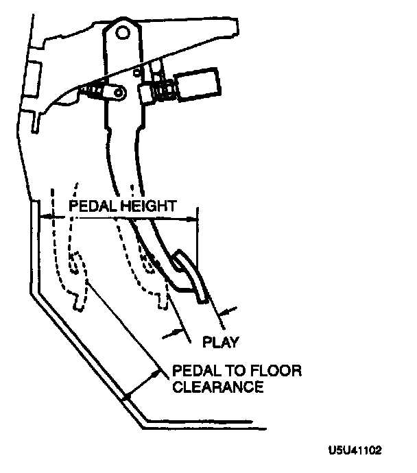

Brake Pedal Assy: Testing and Inspection
BRAKE PEDAL HEIGHT INSPECTION^ Verify that the distance from the center of the upper surface of the pedal pad to the carpet is as specified.
Pedal height (reference value): 171-181 mm (6.73-7.13 inch) (With carpet)
BRAKE PEDAL PLAY INSPECTION
1. Depress the pedal a few times to eliminate the vacuum in the system.
2. Lightly depress the pedal by hand until resistance is felt, and inspect for the free play.
Free play: 4.0-8.4 mm (0.16-0.33 inch)
BRAKE PEDAL-TO-FLOOR CLEARANCE INSPECTION
1. Verify that the distance from the floor panel to the center of the upper surface of the pedal pad is as specified when the pedal is depressed with a force of 589 N (60 kgf, 132 lbs.).
Pedal-to-floor clearance: 95 mm (3.74 inch) min. (Without carpet)

2. If the distance is less than specified, inspect for air in the brake system.